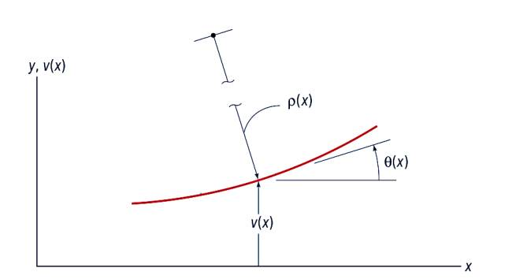
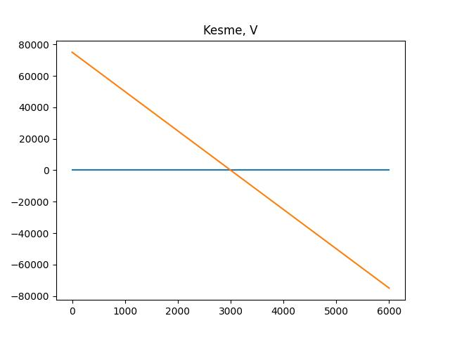

Materyel Mekaniği - 6
Bükülen bir çubuğun formüllerine bir giriş [1] kaynağında yapıldı. Orada moment-eğri (moment-curvature) formülü gösterilmişti.
$$ M(x) = \frac{E(x)I(x)}{\rho(x)} = \frac{EI}{\rho} \qquad (1) $$
Şimdi bu formülü genişletelim, ve bir ikinci derece türeve eşitleyelim.
Resimde gösterilen semboller $M$ bükme momenti, $\rho$ çubuğun $+y$ tarafındaki bükülme çemberinin, eğiminin yarıçapı (radius of curvature). $v$ ise yine $+y$ kısmındaki yer değişimidir. Çubuğa uygulanan kuvvet dağılımının ne olduğu önemli değil, sonuçta odaklandığımız çubuğun ufak bir kısmı.
[7] kaynağında bir çemberi (yarıçapını) onun bir eğriye dokunduğu noktadaki türevler üzerinden temsil etme tekniğini paylaştık. Bu formülü mevcut probleme uygulayabiliriz.

Üstteki örnekte çemberin yarıçapı $\rho$, türevler ise $\mathrm{d} v / \mathrm{d} x$. Formül [6, sf. 466],
$$ \frac{1}{\rho} = \frac {\dfrac{\mathrm{d}^2 v}{\mathrm{d} x^2}} { \left[ 1 + \left( \dfrac{\mathrm{d} v}{\mathrm{d} x} \right)^2 \right]^{3/2} } $$
Üstteki problemde eğim çok ufaktır o zaman $\mathrm{d} v / \mathrm{d} x$ ufak kabul edilir (resimdeki eğim eğitim amaçlı abartılmış), demek ki bölendeki kare hesabı daha da ufalır, geriye sadece 1 kalır, 1 ile bölümü yok sayarız, geriye kalanlar
$$ \frac{1}{\rho} \approx \frac{\mathrm{d}^2 v}{\mathrm{d} x^2} \qquad (2) $$
Şimdi (1) formülünü tekrar düzenlersek,
$$ \frac{1}{\rho} = \frac{M}{EI } $$
diyebilirdik. Bu formülün sol tarafının (2) sol tarafı ile aynı olduğunu görüyoruz. Demek ki onları eşitleyebiliriz, moment-eğri formülü şu hale gelir,
$$ \frac{\mathrm{d}^2 v}{\mathrm{d} x^2} = \frac{M}{E I} $$
Formüller daha kısa olsun diye bazı notasyonel ekler yapalım,
$$ v' = \frac{\mathrm{d} v}{\mathrm{d} x} \quad v" = \frac{\mathrm{d}^2 v}{\mathrm{d} x^2} \quad M' = \frac{\mathrm{d} M}{\mathrm{d} x} \quad $$
İki üstteki formül kısa notasyonla söyle olur,
$$ EI v" = M \qquad (3) $$
Bir formül daha, sonra faydalı olacak, hatırlarsak,
$$ v = \frac{\mathrm{d} M}{\mathrm{d} x} $$
idi, o zaman (3)'teki formülün iki tarafının $x$'e göre türevini alırsak,
$$ EI v"' = \frac{\mathrm{d} M}{\mathrm{d} x} = V $$
Yani [5, sf. 683]
$$ v = EI v"' = EI \frac{\mathrm{d}^3 v}{\mathrm{d} x^3} \qquad (6) $$
Ayrıca [4]'de gösterilmişti, $\mathrm{d} v / \mathrm{d} x = -q$ olduğu için
$$ EI v"" = \frac{\mathrm{d} v}{\mathrm{d} x} = -q $$
ifadesi de doğrudur.
Farklı bir açıdan / anlatımla şimdiye kadar görülenleri tekrarlamak iyi olabilir, ve önceki derste gösterilenlerle beraber aynı formüllere erişmeye çalışalım [8, sf. 172]. Alttaki ufak parçaya bakalım,

Dikey kuvvetleri toplarsak,
$$ -w \mathrm{d} x - \mathrm{d} V = 0 $$
$$ w = -\frac{\mathrm{d} V}{\mathrm{d} x} $$
Momentleri toplarsak ve sıfıra eşitlersek,
$$ -V \mathrm{d} x + \mathrm{d} M + w(x) \mathrm{d} x \left( \frac{\mathrm{d} x}{2} \right) = 0 $$
$$ V = \frac{\mathrm{d} M}{\mathrm{d} x} $$
Bükülme momenti ile kesme kuvveti arasındaki eşitlik elde edilebildi çünkü eşitliğin sol tarafını $\mathrm{d} x$ ile böldük, ve sonucun limitini aldık, $\mathrm{d} x$ sıfıra yaklaşırken $w(x)$ terimi yokoldu.
Ayrıca daha önceden biliyoruz ki eğrilik $\kappa$ ile moment arasında bir ilişki var,
$$ \kappa = \frac{1}{\rho} = \frac{M}{EI} $$
Ufak açılar için eğrilik
$$ \kappa = \frac{\mathrm{d}^2 v}{\mathrm{d} x^2} $$
Eğriliğin diğer formülünü üstteki eşitliğin sağ kısmına eşitleyelim,
$$ \frac{\mathrm{d}^2 v}{\mathrm{d} x^2} = \frac{M}{EI} $$
$M$ için çözersek,
$$ EI \frac{\mathrm{d}^2 v}{\mathrm{d} x^2} = M $$
Bir türev alalım,
$$ \frac{\mathrm{d} }{\mathrm{d} x} EI \frac{\mathrm{d}^2 v}{\mathrm{d} x^2} = \frac{\mathrm{d} M}{\mathrm{d} x} $$
Sağ tarafın $V$ olduğunu biliyoruz,
$$ \frac{\mathrm{d} }{\mathrm{d} x} EI \frac{\mathrm{d}^2 v}{\mathrm{d} x^2} = V $$
Bir türev daha alırsak,
$$ \frac{\mathrm{d}^2 }{\mathrm{d} x^2} EI \frac{\mathrm{d}^2 v}{\mathrm{d} x^2} = \frac{\mathrm{d} V}{\mathrm{d} x} $$
Bu sağ tarafın da $-w$ olduğunu biliyoruz,
$$ \frac{\mathrm{d}^2 }{\mathrm{d} x^2} EI \frac{\mathrm{d}^2 v}{\mathrm{d} x^2} = -w $$
Eğer $EI$ sabit ise üstteki formül şöyle yazılabilir,
$$ EI \frac{\mathrm{d}^4 v}{\mathrm{d} x^4} = -w $$
Problem Çözmek
Euler-Bernoulli kirişlerini temel alan analizleri üç adıma bölmek mümkündür.
1) Uygulanan yük $q$'yu kullanarak saptırma (deflection) fonksiyonu $y$'yi hesapla,
$$ q = E I \frac{\mathrm{d}^4 y}{\mathrm{d} X_1^4} $$
Formülde görüyoruz eğer $q$ biliniyorsa ve elde yeterli sınır şartları var ise (dört tane) diferansiyel denklemi kullanarak $y$'yi bulabiliriz [1, Lecture 2, 2:02:00].
2) Saptırma $y$ bulunduktan sonra onu kullanarak kesme (shear) ve bükülme momentini hesapla,
$$ M = E I \frac{\mathrm{d}^2 y}{\mathrm{d} X_1^2}, \quad V = E I \frac{\mathrm{d}^3 y}{\mathrm{d} X_1^3} $$
çünkü sonuçta $M,V$ hesapları $y$'nin birer fonksiyonu, elde edilen $M,V$ sonuçları $X_1$'in fonksiyonları olacak tabii ki.
3) Oradan hareketle moment ve kesme $M,V$ bulunanca stres bileşenlerini bulabilirim,
$$ \sigma_{11} = -\frac{M X_2}{I}, \quad \sigma_{12} = -\frac{VQ}{I b} \qquad (2) $$
Soru
Alttaki 6 metreli Euler-Bernoulli kirişinin uygulanan $q$ yükü sebebiyle sahip olacağı yer değişim fonksiyonunu bulun. Kirişin Young genliği 20,000 MPa, ve ona eşit şekilde dağılmış bir 45 kN / m $q$ yükü uygulanıyor, kalınlığı 600 mm, yüksekliği 800 mm.

Çözüm
Bir dikdörtgenin atalet momenti $b h^3 / 12$. EI tabii ki Young'in genliği çarpı bu sayı olur. Aradığımız $y$ denklemi, dördüncü dereceden bir diferansiyel denklem çözeceğiz. Dördüncü derece demek nihai çözüm için dört tane sınır şartı gerekli demek. Bu şartları vermeden çözersek,
import sympy as sym
L = 6000 # mm bazinda
Em = 20000
b = 500
h = 800
Ig = (b * h**3)/12
EI = Em * Ig
q = -25 # Newton icin 1000 carpip mm icin 1000 ile bolduk ayni kaldi
X1, X2 = sym.symbols('X1, X2')
y = sym.Function('y')
sol = sym.dsolve(EI*y(X1).diff(X1,4)-q, y(X1))
print (sym.latex(sol))
y{\left(X_{1} \right)} = C_{1} + C_{2} X_{1} + C_{3} X_{1}^{2} + C_{4} X_{1}^{3} - \frac{25 X_{1}^{4}}{10240000000000008}
Çağrı dsolve sıfıra eşitlik faraziyesi ile hareket ediyor, bu sebeple
üstteki çağrıda diferansiyel denklemin neye eşit olduğunu berlirtmedik, sıfıra
eşitlik farz edildi.
$$ y{\left(X_{1} \right)} = C_{1} + C_{2} X_{1} + C_{3} X_{1}^{2} + C_{4} X_{1}^{3} - \frac{25 X_{1}^{4}}{10240000000000008} $$
$X_1^4$ katsayısı [1, Lecture 2]'de 1 bölü büyük bir sayı olarak gösterilmiş, acaba aynı sonuca vardık mı? Kontrol edelim,
print (1/(25./10240000000000008.))
409600000000000.3
Katsayı aynı. Gördüldüğü gibi çözümde 4 tane sabit var, bu sabitler orada çünkü sınır şartlarını tanımlamadık. Onlar tanımlanınca sabitler yokolacak,
y1 = y(X1).subs(X1,0)
y2 = y(X1).subs(X1,L)
th = y(X1).diff(X1)
th1 = th.subs(X1,0)
th2 = th.subs(X1,L)
sol = sym.dsolve(EI*y(X1).diff(X1,4)-q, y(X1),ics={y1:0,y2:0,th1:0,th2:0})
print (sym.latex(sol))
y{\left(X_{1} \right)} = - \frac{25 X_{1}^{4}}{10240000000000008} + \frac{12500 X_{1}^{3}}{426666666666667} - \frac{37500000 X_{1}^{2}}{426666666666667}
$$ y{\left(X_{1} \right)} = - \frac{25 X_{1}^{4}}{10240000000000008} + \frac{12500 X_{1}^{3}}{426666666666667} - \frac{37500000 X_{1}^{2}}{426666666666667} $$
Şimdi kesme $V$ ve moment $M$ hesaplanabilir, bu fonksiyonlar $y$'nin farklı derecedeki türevlerini içeriyor,
y = sol.rhs
V = EI * y.diff(X1,3)
M = EI * y.diff(X1,2)
print (V)
print (M)
74999.9999999999 - 25.0*X1
-12.5*X1**2 + 74999.9999999999*X1 - 74999999.9999999
Stres öğesini hesaplayabilirim şimdi, formülleri (2)'de,
S11 = -M * X2 / Ig
print (sym.simplify(S11))
X2*(5.85937499999999e-10*X1**2 - 3.515625e-6*X1 + 0.003515625)
Q = b*((h/2) - X2) * ((h/2)+(X2/2))
S12 = (-V * Q) / (Ig*b)
print (S12)
9.375e-14*(200000.0 - 500*X2)*(25.0*X1 - 74999.9999999999)*(X2/2 + 400.0)
Yer değişim sonucunu grafikleyelim,
u = sym.lambdify(X1, y,'numpy')
x = np.linspace(0,L,20)
plt.plot(x,u(x))
plt.title(u'Yer Değişim y')
plt.savefig('phy_020_strs_03_03.jpg',quality=30)
Akla yatkın, ortalara doğru kirişin bükülmesi daha fazla her iki yana doğru daha az.
Kesme ve momenti de grafikleyelim,
v = sym.lambdify(X1, V,'numpy')
x = np.linspace(0,L,20)
plt.plot(x,v(x))
plt.title(u'Kesme, V')
plt.savefig('phy_020_strs_03_04.jpg',quality=30)

m = sym.lambdify(X1, M,'numpy')
x = np.linspace(0,L,20)
plt.plot(x,m(x))
plt.title('Moment, M')
plt.savefig('phy_020_strs_03_05.jpg',quality=30)

s11f = sym.lambdify([X1,X2], S11,'numpy')
x = np.linspace(0,L,20)
y = np.linspace(-h/2,h/2,20)
xg,yg = np.meshgrid(x,y)
zg = s11f(xg,yg)
plt.contourf(xg,yg,zg,cmap='gnuplot2')
plt.savefig('phy_020_strs_03_06.jpg',quality=30)

Yine beklenen bir sonuç; grafiğin üst kısmında koyu maviye yakın yerde sıkışma (compression) var orada materyel daralma, içe doğru baskı yaşıyor. Alt kısımda ise gerginlik var, burada materyel yanlara doğru çekiliyor. Desteklere yakın noktalarda alt sol ve sağda sıkışma görüyoruz, onun üstünde gerginlik. Bunlar da mantıklı.
Kaynaklar
[1] Petitt, Intro to the Finite Element Method, University of Alberta, https://www.youtube.com/watch?v=2iUnfPRk6Ro&list=PLLSzlda_AXa3yQEJAb5JcmsVDy9i9K_fi
[2] Gramoll, Mechanics, http://www.ecourses.ou.edu/cgi-bin/ebook.cgi?topic=me
[3] Bayramlı, Fizik, Materyel Mekaniği - 1
[4] Bayramlı, Fizik, Materyel Mekaniği - 2
[5] Gere, Mechanics of Materials
[6] Craig, Mechanics of Materials, Third Edition
[7] Bayramlı, Çok Değişkenli Calculus, Eğrilik (Curvature)
[8] Logan, A First Course in the Finite Element Method
Yukarı